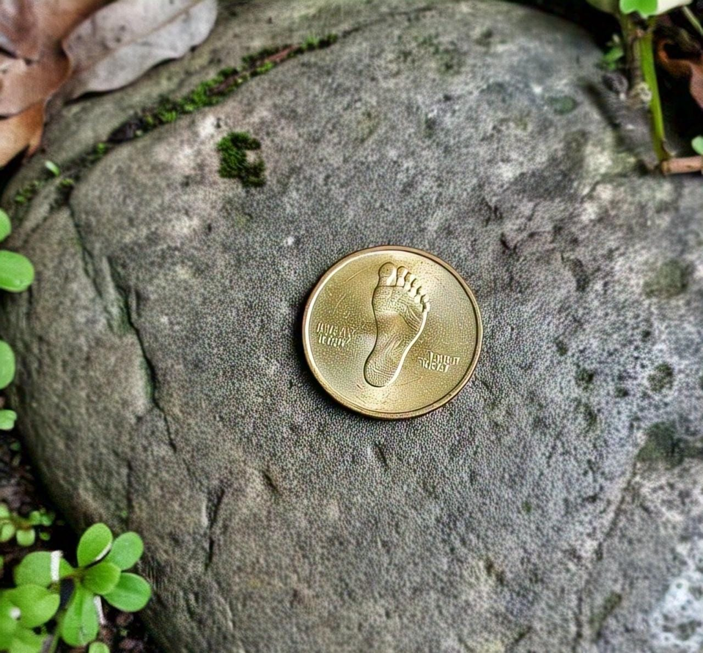
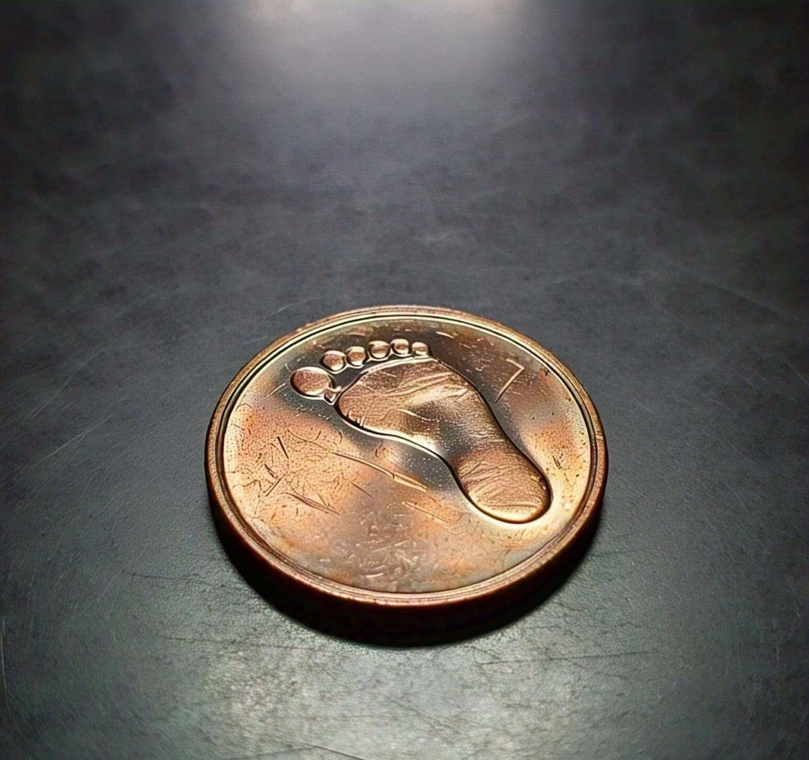
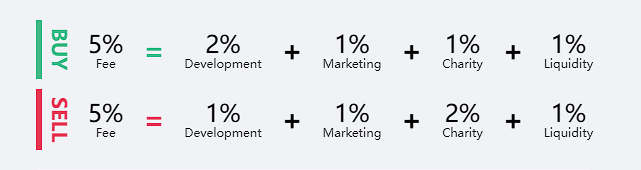

Bienvenidos a la pagina oficial de Tokens Trace


----------------------------------------------------------------- Trace Token (TET)
Contrato: 0x0952c97af1e4c95208d1fda55be696ea6a0acd68
---------------------------------------------------------------------¿Que es Trace y para que sirve?
Imagina una moneda digital, una criptomoneda, diseñada con un propósito que va más allá de las transacciones financieras convencionales. Esta criptomoneda se erige como una herramienta poderosa para empoderar a una comunidad y financiar directamente las iniciativas que considera más importantes.
Su funcionamiento se basa en un principio fundamental: una porción predefinida de los impuestos o tasas generadas dentro de su ecosistema se destina a un fondo común. Lo verdaderamente innovador reside en cómo se decide el destino de estos recursos. En lugar de depender de decisiones centralizadas, la comunidad misma toma las riendas.
A través de un sistema de debate abierto y votación transparente, los miembros de la comunidad proponen proyectos que consideran beneficiosos. Estos proyectos pueden abarcar una amplia gama de áreas, desde mejoras en la infraestructura local hasta iniciativas culturales, educativas o ambientales. Cada propuesta se somete al escrutinio y la discusión de la comunidad, permitiendo un intercambio de ideas y la identificación de los proyectos con mayor apoyo.
Finalmente, mediante un proceso de votación digital seguro y auditable, la comunidad decide qué proyectos recibirán financiamiento del fondo común, en proporción a su nivel de apoyo. Esta criptomoneda, por lo tanto, no solo facilita el intercambio de valor, sino que también fomenta una gobernanza participativa y transparente, donde los recursos generados colectivamente se invierten directamente en el bienestar y desarrollo de la propia comunidad, según sus prioridades democráticamente expresadas.
Tokenomics
Suministro total: 8,000,000,000
Suministro maximo: 8,000,000,000
Impuestos: 10%
Precio de salida del Token: $0.0000
El 100% del suministro de tokens se destinará al pool, con liquidez bloqueada PARA SIEMPRE. Con el fin de ser un token solido y confiable.
Donde van destinados los impuestos (EXPLICADO MÁS ABAJO)

Planes a largo plazo
Fase 1
- Creacion de sitio web - Creacion del logo - Logistica de token - Busqueda de inversores - Lanzamiento silencioso - Implementar redes sociales
Fase 2
- Fin de la busqueda de inversores - Incluir token en pancakeswap - Incluir token en CoinMarketCap - incluir token en Coin Gecko - Mantener fuerte volatilidad del token en sus comienzos - Dar a conocer el token - Marketing incial
Fase 3
- Crear lazos con la comunidad - Crear foros de debate para financiacion - comenzar los pagos a inversores - Token estable - Estar en los pricipales exchanges - Campañas considerables de Marketing
Fase 4
- Añadir staking - Añadir aidrops - Incluir en binance - Gran camapaña de Marketing en todas las redes - Fin de pago a co-fundadores/socios
Busqueda de inversores para agregar liquidez y recompensas
Todos aquellos que deseen cooperar con el proyecto y ser socios co-fundadores, tendran la oportunidad de contactarse con el equipo para la liquidez inicial a la hora de la salida del token.
Aqui debajo habrá un formulario de google para rellenar con algunos datos y estar listos.
No hay limites de asociados. Dependiendo la cantidad invertida en el proyecto, recibiran una cantidad exacta de TET en base a la recaudaccion de impuestos "desarrolladores".
Cantidades:
Socio Plateado
$100USD = 800 TET / $1000USD = 8000 TET / $10,000USD = 80,000 TET
Socio Dorado
$100,000USD = 800,000 TET / $1,000,000USD = 8,000,000 TET / $10,000,000USD = 80,000,000 TET
Link de formulario directo
FORMULARIO
Impuestos
10% total
Compra 5%
2% Desarroladores
1% Caridad
1% Marketing
1% Liquidez
Venta 5%
1% Desarroladores
2% Caridad
1% Marketing
1% Liquidez
Redes Sociales y blockchain